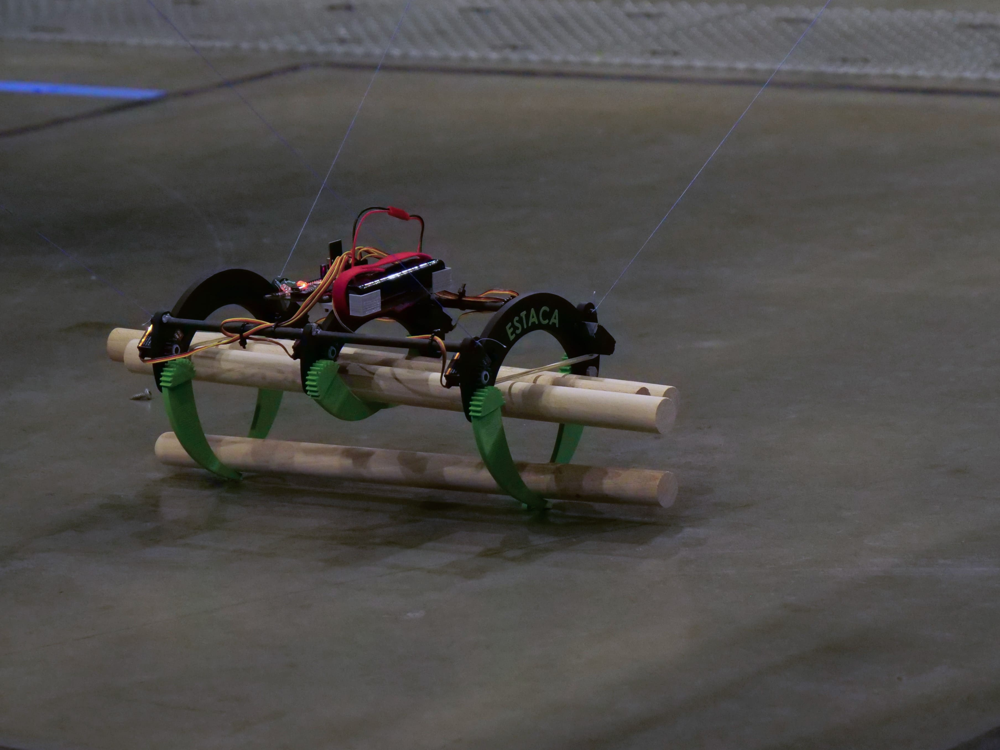

Pince permettant de prendre plusieurs grumes en même temps
 Système de poulie pour translater la pince dans les 3 dimensions
Système de poulie pour translater la pince dans les 3 dimensions
La pince et le système de poulis associés sont les systèmes les plus complexes du dirigeable. Pour les réaliser nous avons du faire une phase de préconception ainsi que plusieurs prototypes.
Animation 3D de la pince
Enfin, grâce à notre première place nous avons eu l'occasion de faire voler notre dirigeable lors de l'inauguration du Hangar Y pendant le festival Star's up en 2022.
 Inauguration du Hangar Y, Meudon, France
Inauguration du Hangar Y, Meudon, France